577
ПРИТУРКИ
15. ЧАТАЛАРСКИЯТ ОМОРТАГОВ НАДПИС
(Към стр. 409)
За пръв път тоя надпис биде издаден от Ф. Ив. Успенски, който и даде първото четене и разбиране на съдържанието му. [1] Самият надпис е доста повреден в някои места, за възстановяването на който могат да се предложат и други попълвания, несходни с ония на Успенски, както това показа и Бйори. [2] Затова ние ще се спрем тук само върху тия места, които според нас допущат други възможни попълвания. Такива места са следните :
8 р. съдържа: 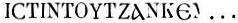,
който Успенски попълва: 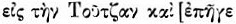.
Бйори не е съгласен с това четене, защото „Омортаг е живял в мир с гърците”.
Той предлага да се попълни с 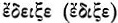
или с ня-
1. Вж. Абоба-Плиска, стр. 545—516; в алб. таб. CXV1II — факсимиле.
2. Bury, Eastern Roman Empire, p. 368—9; ИБИД, IV, стр. 144—5.

577
коя подобна дума. [3] Но нам ни се струва, че понеже в надписа след КЕ ясно личи остатък от буква М, то най-подходно и по смисъл ще бъде попълването 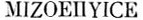 = 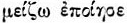 в смисъл „увеличил”, „усилил,” „умножил,” що напълно пояснява 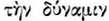 в следния ред.
9 p. :
според Успенски значи 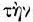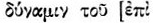,
а според Бйори 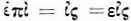.
Ho 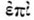 тук
е неуместно при недопустимостта на гл. 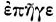
в 8 p.; освен това формата  вместо 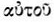
или
вместо 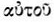
или  не
се среща нито на един от другите надписи от времето на Омортаг, няма да
говорим за нашия надпис, дето навсякъде стои .
Затова ние мислим, че при 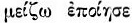
по-подходно ще бъде, ако тоя ред се попълни с 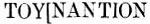
= 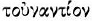 в смисъл
„спроти,” „спрямо,” „откъм,” т. е. че с издигането на новата крепост се
увеличавала и мощта, силата на държавата спрямо, спроти гърци и славяни,
както това дава да се разбира следният ред.
не
се среща нито на един от другите надписи от времето на Омортаг, няма да
говорим за нашия надпис, дето навсякъде стои .
Затова ние мислим, че при 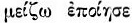
по-подходно ще бъде, ако тоя ред се попълни с 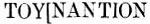
= 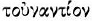 в смисъл
„спроти,” „спрямо,” „откъм,” т. е. че с издигането на новата крепост се
увеличавала и мощта, силата на държавата спрямо, спроти гърци и славяни,
както това дава да се разбира следният ред.
12 р. : 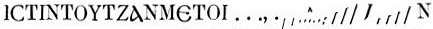,
което Успенски попълва и чете 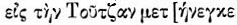.
Според Бйори това попълване е „много съмнително,” а пък според нас вече
самите добре запазени букви в края на тоя ред не допущат подобно попълване,
а още повече пък глаголна форма, която непременно би имала пред себе си
КЕ =  . Като
виждаме в крайните остатъци от букви (които във факсимилето на Успенски
са пропуснати) думата AYLIN, ние заключаваме, че тук е било отбелязано
де е бил построен мостът спроти двореца и крепостта, именно „отзад двореца”,
т. е. отвъд крепостта в посока от север към юг, от Плиска към новия дворец,
и затова ние предлагаме въз основа на това, че следната подир 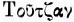
дума е почвала с METOI, да попълним реда с 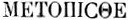
= 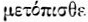 или
METOПIN = 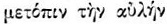.
. Като
виждаме в крайните остатъци от букви (които във факсимилето на Успенски
са пропуснати) думата AYLIN, ние заключаваме, че тук е било отбелязано
де е бил построен мостът спроти двореца и крепостта, именно „отзад двореца”,
т. е. отвъд крепостта в посока от север към юг, от Плиска към новия дворец,
и затова ние предлагаме въз основа на това, че следната подир 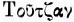
дума е почвала с METOI, да попълним реда с 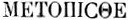
= 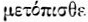 или
METOПIN = 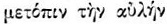.
14—15 p. : 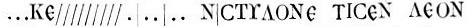
Успенски предлага да се чете: 
3. Bury, ibid., стр. 368, бел. 5; ИБИД, стр. 147, бел. 7.

578
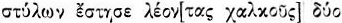, т. е. „и поставил два медни лъва на една от колоните”. Бйори намира такова разположение за „крайно неартистично” и затова предлага да се чете 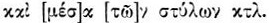, което и ние възприемаме като най-подходно и по форма, и по смисъл.
17 p. 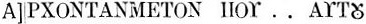
според Успенски гласи: 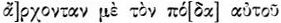.
Тук 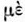 според
нас е непонятно и необяснимо, защото в целия надпис за княза се говори
в 3-о лице, а не в 1-во и 3-о, както е в Търновския надпис. [4]
Ние мислим, че тук по-скоро е пропусната от каменорезача цяла сричка ТА
под влиянието на следната дума, която така също почва с Т—TON, и попълваме
МЕ[ТА] в значение „с”, което подхожда на гл.  ,
т. е. „навежда,” а оттука „притиска” 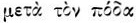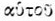
— „с ногата си.”
,
т. е. „навежда,” а оттука „притиска” 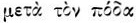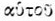
— „с ногата си.”
18—19 p. :  Успенски попълва: 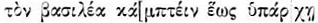
или 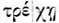,
но Бйори предлага да се чете: 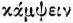,
което според нас е по-правилно и отговаря на 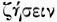
в 22 ред.
Успенски попълва: 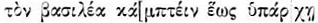
или 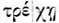,
но Бйори предлага да се чете: 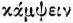,
което според нас е по-правилно и отговаря на 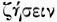
в 22 ред.
19 и 20 p. :
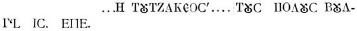
За тия редове Успенски дава:
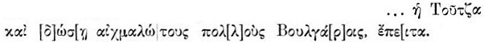
Това попълване Бйори счита за „крайно съмнително реставриране”, без
да предлага друго някое, а се ограничава само с поправките 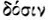,
т. е. 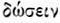
вм. 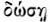.
Обаче ако се вгледаме по-внимателно в остатъците на буквите на камъка,
па дори и във факсимилето на Успенски, то лесно ще се убедим, че подобно
попълване е недопустимо. И наистина след КЕ (р. 19) се ясно очертават дирите
на буква Е и се чете КЕЕОС, т. е. 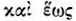,
което напълно потвърждава и попълването в р. 18 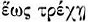.
След КЕЕОС се ясно забелязва горният край на буквата А, следователно следнатата
дума е почвала с тая буква, която може да бъде или глагол — сказуемо, или
друга дума в изречението. Ние обаче съзираме глагола в края на р. 20 —
в
4. Вж. по-долу, Притурка № 16.

579
ЕПЕ..., което по никой начин не може да се чете 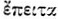, защото в текста би стояло ЕПI, и го попълваме ЕПЕ[ХН, т. е. 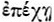 в значение „задържа”, „запира”. Поради това края на р. 19 попълваме ANTICTA, или р. 19 и 20 след 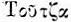 четем: 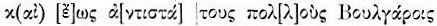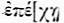 и след това прибавяме 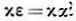 за свръзка със следното изречение.
24 и 25 р. За 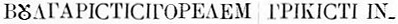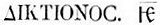, които Успенски чете: 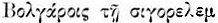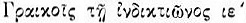. Ние приемаме четенето на С. П. Шестаков [5] и И. Микола [6], които независимо един от друг предлагат правилното четене [7] [7] .
И тъй целия надпис ние четем така в книжовен правопис :
5. Вж. Bury, Хронологический цикл болгар, прев. Н. М. Петровский, Казань, 1912, отдел, отпеч., стр. 9, бел. 1.
6. И. Миккола, Тюрко-болгарское леточисление, в Известия Отд. русск. яз. и словен., т. XVIII (1913), кн. 1, стр. 247, бел. 1. — От същия, Die Chronologie der trkischen Donaubulgaren, S.-A., S. 4, Amm. 1
7. Подобно на „по славянски” и „по руски” у Константин Багренородни, напр. в De administr. imperio, ed Bon., p. 75-77.

580
т. е.
„Великият хан Омортаг е княз от бога в земята, дето се е родил. Като остая [да пребъдва] в лагера на Плиска, той построи аул [дворец] на Туча и уголеми силата си спрямо гърци и славяни. И построи изкусно мост на Туча отзад аула [двореца]; а в самата крепост постави четири стълба и между стълбовете два медни лъва. Нека бог удостои княза от бога да притиска с ногата си императора, докато тече Туча и докато тя задържа многото български противници, и като покорява враговете си, в радост и веселие да проживее сто години. А времето, когато той [дворецът или крепостта] биде построен, беше по български сигор елем, а по гръцки 15-и индиктион.” [8]
8. Обяснение на хронологическите данни
тук вж. по-горе, стр. 416—417 и Притурка №
1, стр. 474. — [Ново четене, превод и коментар на Чаталарския и Търновския
надпис вж. в посочените съчинения на В. Бешевлиев.]
[Next]